نوبت بدون پرداخت اینترنتی، مشاوره، پرونده دندانپزشکی و کار روزانه مطب. این دفترچه میگوید هر نقش از کجا وارد شود و هر کار را چطور انجام دهد.
سایت عمومی برای معرفی مطب، خدمات و پزشک
حساب بیمار برای نوبت، سؤال و پرونده سلامت
پنل پزشک برای معاینه، نقشه دندان و پاسخ مشاوره
پنل منشی برای تأیید نوبت، ساخت بیمار و حساب مالی
قابلیتها در یک نگاه
سامانه سه فضای جدا دارد: سایت عمومی، حساب بیمار و پنل مطب. پرداخت اینترنتی در هیچجا انجام نمیشود. نوبت اول «درخواست» است و مطب آن را قطعی میکند.
قابلیت
بیمار
پزشک
منشی
مدیر مطب
دیدن سایت، خدمات، پزشک و پستها
بله
بله
بله
بله
ثبتنام، ورود و تغییر رمز
بله
بله
بله
بله
درخواست نوبت و لغو نوبت خودش
بله
از حساب بیمار
از پنل
از پنل
ارسال مشاوره و دیدن پاسخ
بله
پاسخ میدهد
پاسخ میدهد
پاسخ میدهد
تکمیل اطلاعات سلامت خودش
بله
—
—
—
دیدن امروز، تقویم و نوبتها
فقط نوبت خودش
بله
بله
بله
تأیید، حضور، پایان، غیبت و لغو نوبت
فقط لغو
بله
بله
بله
ساخت حساب بیمار
—
—
بله
بله
تشخیص، طرح درمان و نقشه دندان
فقط مشاهده طرح و هشدار
ثبت میکند
فقط مشاهده
ثبت میکند
رضایتنامه، پیگیری و یادداشت داخلی
یادداشت داخلی را نمیبیند
نمیبیند
بله
بله
حساب مالی پرونده
—
—
بله
بله
ساعت ثابت هفته
—
فقط مشاهده
فقط مشاهده
تغییر میدهد
بستن یک بازه (مرخصی یا جلسه)
—
—
بله
بله
تلگرام
—
اگر اجازه داشته باشد
اگر اجازه داشته باشد
بله، بهعلاوه صندوق ارسال
تیم، خدمات، گالری، متن و تنظیمات سایت
—
—
—
بله
در این مطب، حساب دکتر امیر سلطانطویه هم پزشک است و هم مدیر. برای همین در پنل او منوی «مدیریت مطب» کامل دیده میشود. منشی همان کار روزانه را دارد، ولی تیم، خدمات، گالری و تنظیمات سایت را نمیبیند. تصویرها با یک بیمار نمونه به نام سارا احمدی گرفته شدهاند.
۱. سایت عمومی
هر کسی بدون ورود، سایت را میبیند. از همینجا مسیر نوبت و مشاوره شروع میشود. اگر کاربر وارد نشده باشد، دکمهها او را به ثبتنام یا ورود میبرند.
صفحه اول
بالای صفحه معرفی مطب است: تیتر، توضیح، عکس درمان، و دو دکمه «گرفتن نوبت» و «مشاوره آنلاین». پایینتر خدمات، معرفی پزشک، سه قدم نوبت، پستها، آدرس، نقشه و پرسشهای رایج آمده است.
آدرس سایت را باز کنید.
برای وقت، «گرفتن نوبت» را بزنید. برای سؤال، «مشاوره آنلاین» را بزنید.
شماره تلفن بالای صفحه و پایین صفحه برای تماس مستقیم است.
پرسشهای پایین صفحه را باز کنید؛ مثلاً اینکه برای نوبت پول اینترنتی لازم نیست.
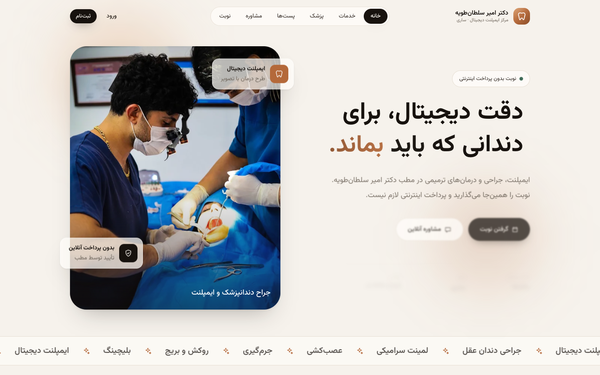
صفحه اول: معرفی، دکمههای نوبت و مشاوره، و نوار خدمات.
خدمات
فهرست درمانهای مطب اینجاست: ایمپلنت، جراحی دندان عقل، لمینت، عصبکشی، جرمگیری، روکش و بلیچینگ. هر کارت خلاصه و مدت حدودی را نشان میدهد.
از منو «خدمات» را باز کنید.
روی یک خدمت بزنید تا توضیح کامل را ببینید.
از همان صفحه میتوانید برای همان خدمت نوبت بخواهید.
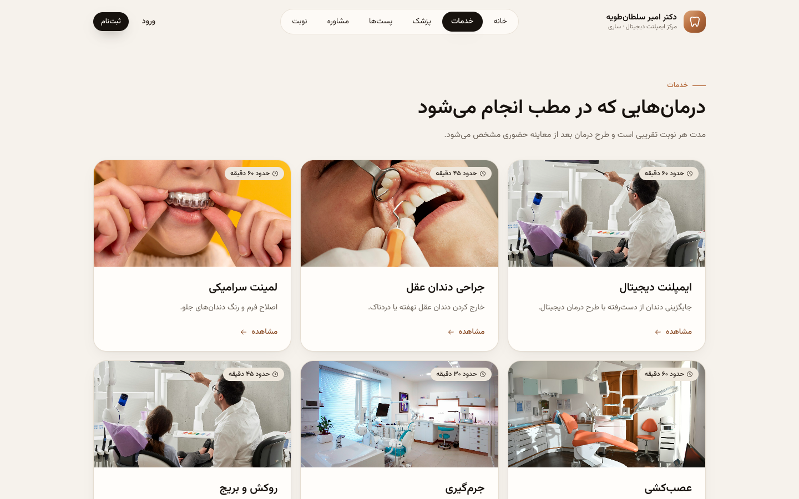
صفحه خدمات.
پزشک
صفحه پزشک نام، تخصص، معرفی و عکس دکتر را نشان میدهد. از اینجا هم میشود نوبت گرفت.
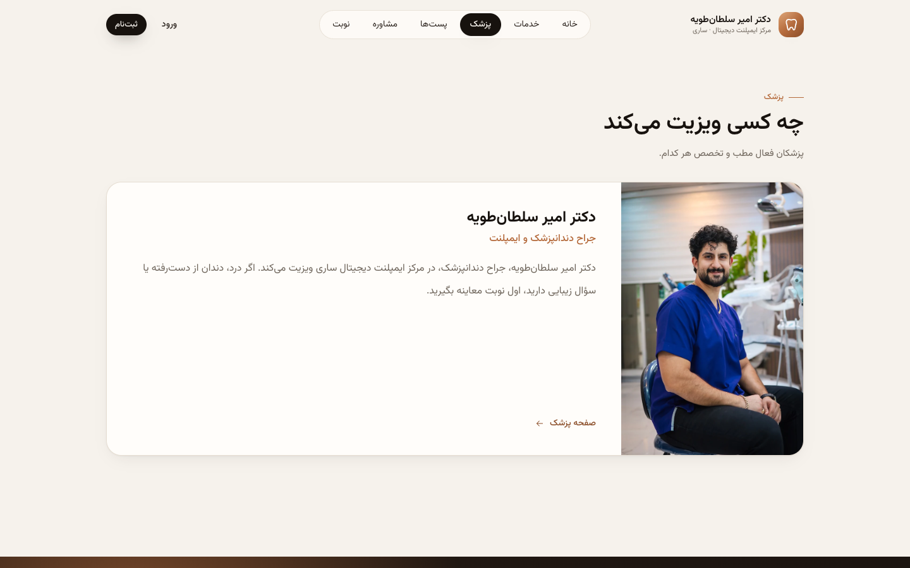
فهرست پزشک مطب.
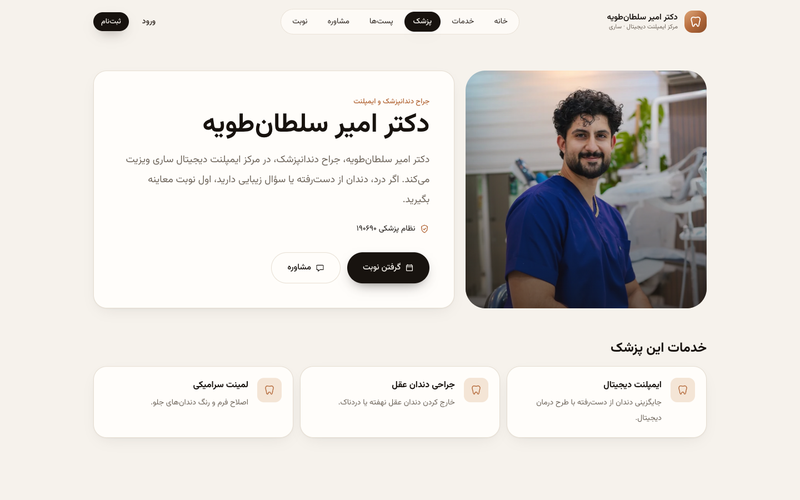
صفحه اختصاصی دکتر امیر سلطانطویه.
پستها
تصویرها و ویدیوهایی که مطب منتشر کرده در «پستها» دیده میشود. اگر هنوز پستی نباشد، صفحه خالی میماند تا مدیر از گالری چیزی اضافه کند.
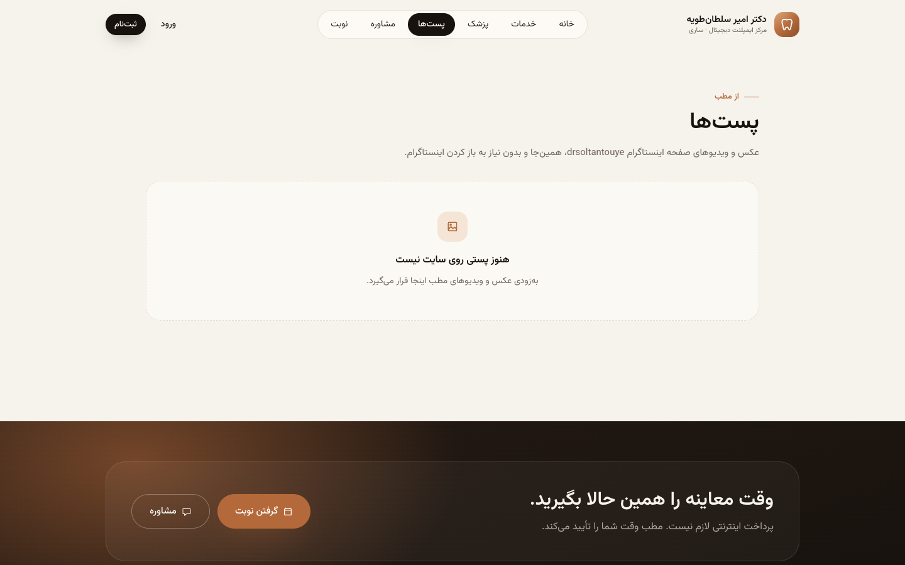
صفحه پستها.
ثبتنام و ورود
بیمار با شماره موبایل و یک رمز حداقل ۸ کاراکتری حساب میسازد. ورود با همان شماره و رمز است. زیر فرم، یک تصویر امنیتی هست. رقمهای داخل تصویر را در کادر بنویسید. اگر اشتباه باشد، تصویر تازه میشود.
برای حساب تازه، «ثبتنام» را بزنید. نام، موبایل و رمز را بنویسید.
کد تصویر را وارد کنید و فرم را بفرستید.
دفعه بعد از «ورود» استفاده کنید.
اگر از قبل وارد شده باشید، منوی بالا بهجای ورود، نام شما را نشان میدهد.
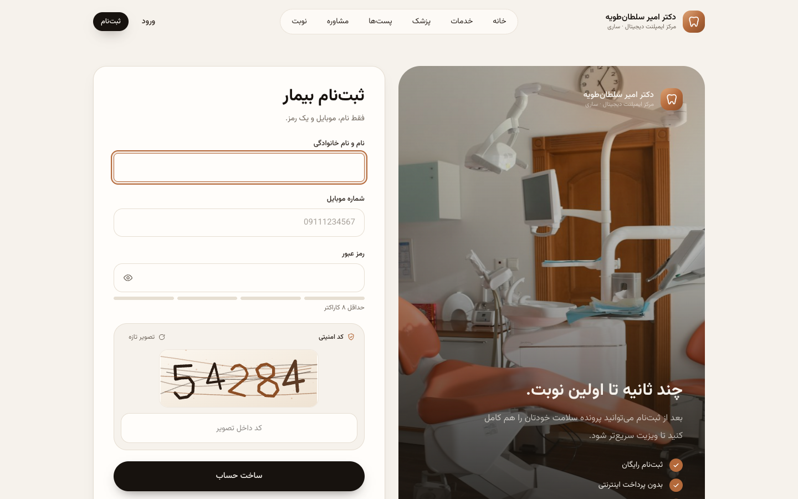
ثبتنام بیمار.
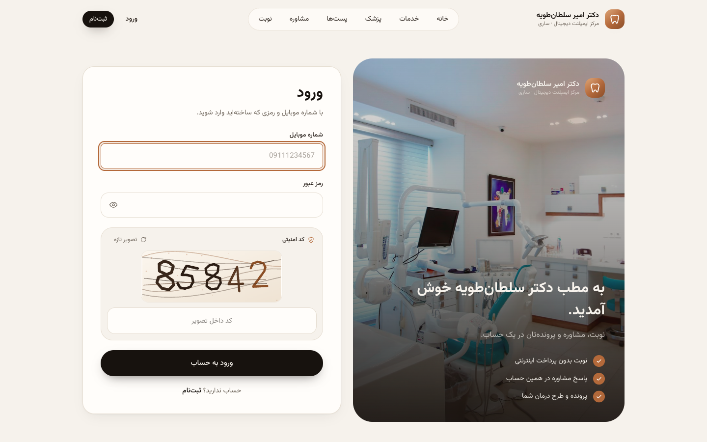
ورود با موبایل، رمز و کد تصویر.
۲. بیمار
بعد از ورود، بیمار به «خلاصه» حساب میرود. منوی کناری پنج بخش دارد: خلاصه، نوبتها، مشاوره، پرونده و مشخصات. در گوشی همین پنج مورد پایین صفحه است. دکمه «سایت مطب» برمیگرداند به صفحه عمومی.
خلاصه حساب
این صفحه سه چیز را یکجا نشان میدهد: نوبت بعدی، میانبرهای کار روزانه، درصد تکمیل پرونده، و آخرین مشاورهها.
اگر نوبت فعال ندارید، روی کارت تیره «گرفتن نوبت» را بزنید.
کارتهای «نوبت تازه»، «سؤال از مطب» و «پرونده من» همان کارها را کوتاه میکنند.
حلقه درصد میگوید چند مورد اصلی پرونده پر شده. اگر کمتر از ۱۰۰ باشد، «تکمیل پرونده» را بزنید.
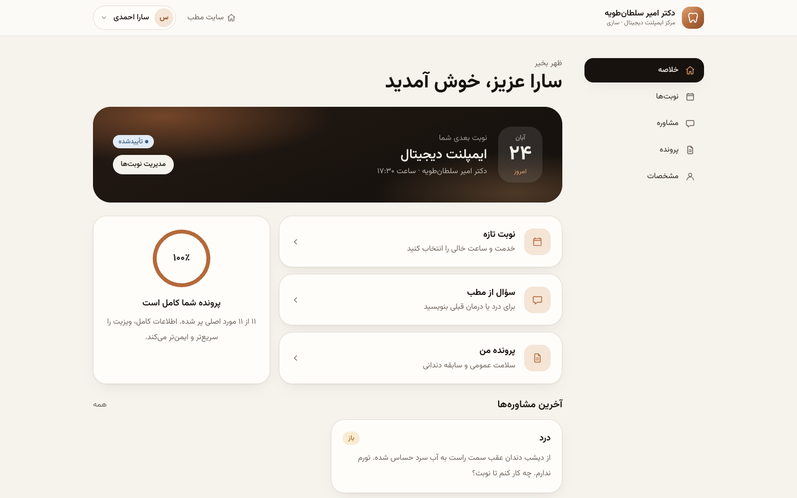
خلاصه حساب سارا: نوبت بعدی، پرونده کامل، و آخرین مشاوره.
گرفتن نوبت
نوبت چهار قدم دارد و پولی جابهجا نمیشود. بعد از ثبت، وضعیت «درخواستشده» است تا مطب تأیید کند.
از منو «نوبتها» و بعد «نوبت جدید» را بزنید. یا از سایت مستقیم بیایید.
خدمت را انتخاب کنید. مدت حدودی کنار اسم نوشته شده.
پزشک را انتخاب کنید. اگر مطب یک پزشک داشته باشد، خودش انتخاب میشود.
یک روز باز را از تقویم بزنید. عدد کوچک روی روز، تعداد ساعت خالی است. روز تعطیل یا بدون ظرفیت قابل انتخاب نیست.
ساعت را انتخاب کنید. ساعتها به صبح و عصر جدا شدهاند.
اگر توضیح دارید، مثل «درد هنگام آب سرد»، در یادداشت بنویسید.
کد داخل تصویر امنیتی را بنویسید و «ثبت درخواست نوبت» را بزنید.
صفحه تأیید، خدمت و زمان را نشان میدهد. درخواست را در «نوبتهای من» هم میبینید.
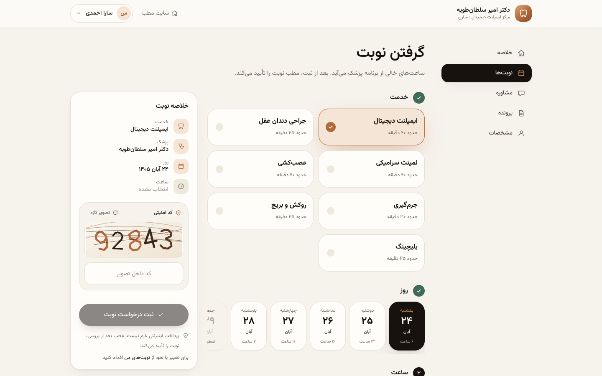
انتخاب خدمت، روز، و کد امنیتی. خلاصه نوبت سمت چپ جمع میشود.
دیدن و لغو نوبت
فهرست سه زبانه دارد: پیشرو، گذشته، لغو شده. تا وقتی نوبت انجام نشده، نوبت درخواستشده یا تأییدشده را میتوان لغو کرد.
«نوبتها» را باز کنید.
وضعیت را بخوانید: درخواستشده، تأییدشده، حاضر در مطب، انجامشده، لغو شده یا نیامده.
برای انصراف، «لغو نوبت» را بزنید و در پنجره تأیید، «بله، لغو شود» را انتخاب کنید.
جابهجایی ساعت از همین حساب انجام نمیشود. نوبت را لغو کنید و یک ساعت تازه بگیرید، یا با مطب هماهنگ کنید تا منشی وضعیت را عوض کند.
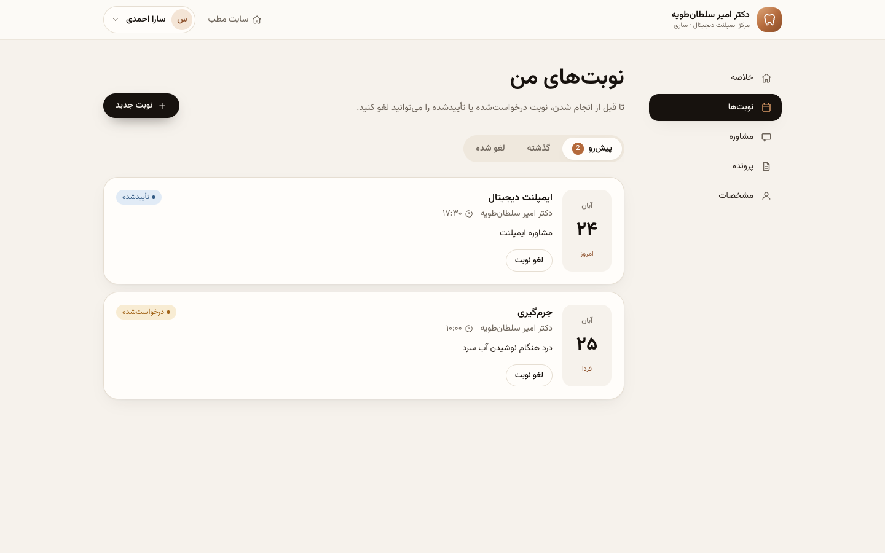
نوبتهای پیشرو، با دکمه لغو برای نوبتهایی که هنوز انجام نشدهاند.
سؤال از مطب
مشاوره یک گفتگوی نوشتهای است. جای معاینه حضوری را نمیگیرد و تشخیص قطعی بعد از ویزیت است. اگر موضوع «اورژانس» باشد، سامانه یادآوری میکند که برای درد شدید، تورم یا تب تلفنی تماس بگیرید.
از منو «مشاوره» و بعد «سؤال جدید» را بزنید.
موضوع را انتخاب کنید: درد، زیبایی، ارتودنسی، اورژانس یا سایر.
شرح را واضح بنویسید: از کی شروع شده، کجاست، و دارو خوردهاید یا نه.
اگر عکس لازم است، یک فایل jpg، png یا webp ضمیمه کنید.
کد تصویر را بنویسید و «ارسال مشاوره» را بزنید.
وارد همان گفتگو میشوید. وقتی مطب جواب بدهد، وضعیت از «باز» به «پاسخدادهشده» عوض میشود.
برای ادامه، در پایین گفتگو بنویسید و «ارسال» را بزنید. عکس را هم میتوانید به پیام اضافه کنید.
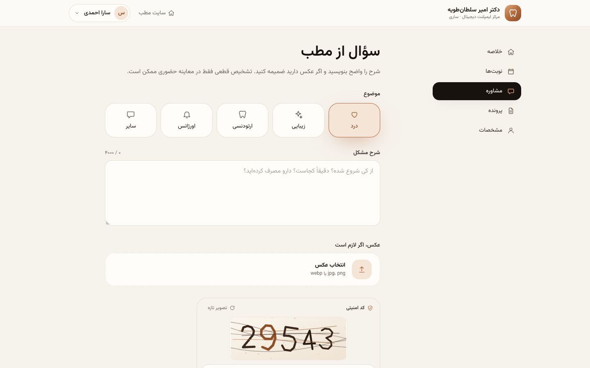
انتخاب موضوع، شرح مشکل، عکس و کد امنیتی.
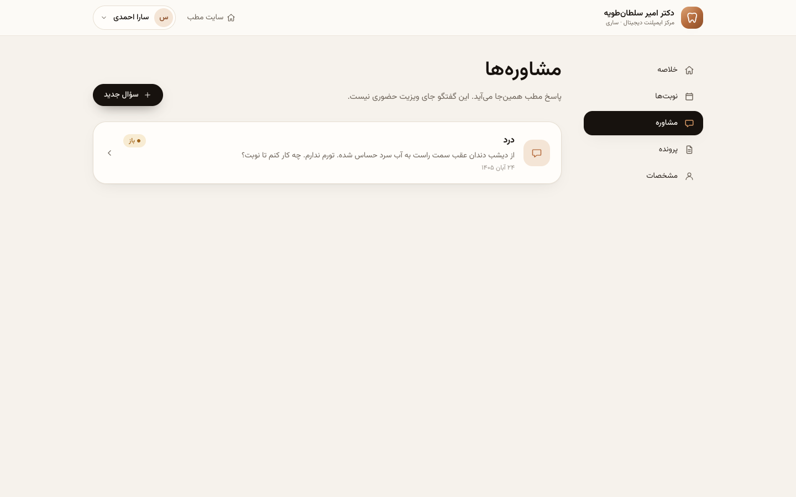
فهرست مشاورههای بیمار.
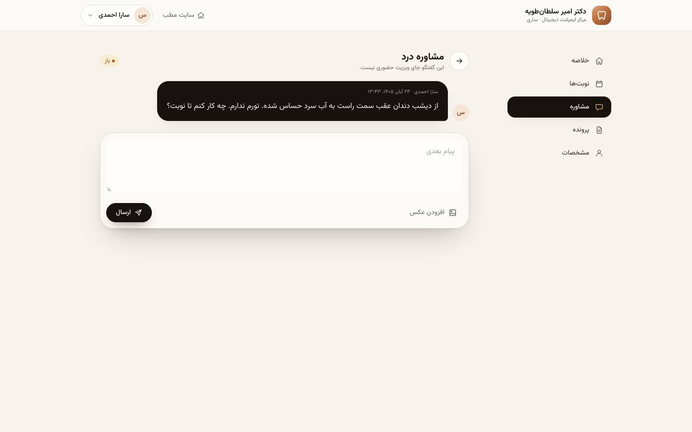
گفتگو. پاسخ مطب در همین صفحه میآید.
پرونده من
بیمار بخش «اطلاعات من» را پر میکند: هویت، دلیل مراجعه، عادتهای دهانی و سلامت عمومی. موارد اصلی در حلقه درصد حساب میشوند: کد ملی، تاریخ تولد، جنسیت، شهر، فرد اضطراری، موبایل او، دلیل مراجعه، آخرین ویزیت دندانپزشکی، حساسیت، دارو و سیگار.
«پرونده» را باز کنید. اگر پرونده نباشد، «ساخت پرونده» را بزنید.
در زبانه «اطلاعات من» فیلدها را پر کنید و ذخیره کنید.
حساسیت و دارو را خالی نگذارید. اگر ندارید بنویسید «ندارم».
زبانه «وضعیت درمان» طرح درمان، هشدارها و نقشه دندان را نشان میدهد. اینها را پزشک مینویسد و بیمار فقط میبیند.
در «تصاویر» میتوانید عکس مربوط به خودتان را بگذارید. رادیوگرافی و عکس درمان را مطب هم اضافه میکند.
یادداشت داخلی مطب را بیمار نمیبیند. طرح درمان، هشدار پزشکی، وضعیت پرونده، رضایتنامه و تاریخ پیگیری برای بیمار قابل دیدن است.
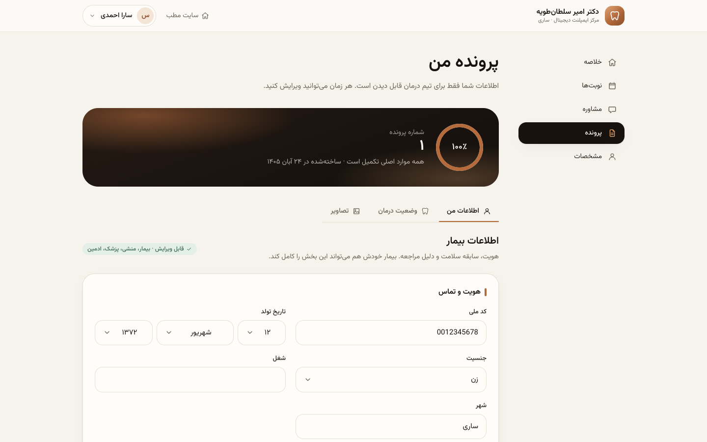
پرونده بیمار: درصد تکمیل و فرم هویت. برچسب سبز میگوید چه کسانی این بخش را ویرایش میکنند.
مشخصات
نام و رمز از اینجا عوض میشود. شماره موبایل شناسه ورود است و در این فرم عوض نمیشود.
«مشخصات» را باز کنید.
نام را اگر لازم است اصلاح کنید.
برای رمز تازه، رمز جدید را بنویسید. نوار قدرت رمز را نشان میدهد. حداقل ۸ کاراکتر.
ذخیره کنید. با عوض شدن رمز، بقیه دستگاهها از حساب خارج میشوند و فقط همین دستگاه میماند.
خروج از همین صفحه یا از منوی نام، بالای سایت، انجام میشود.
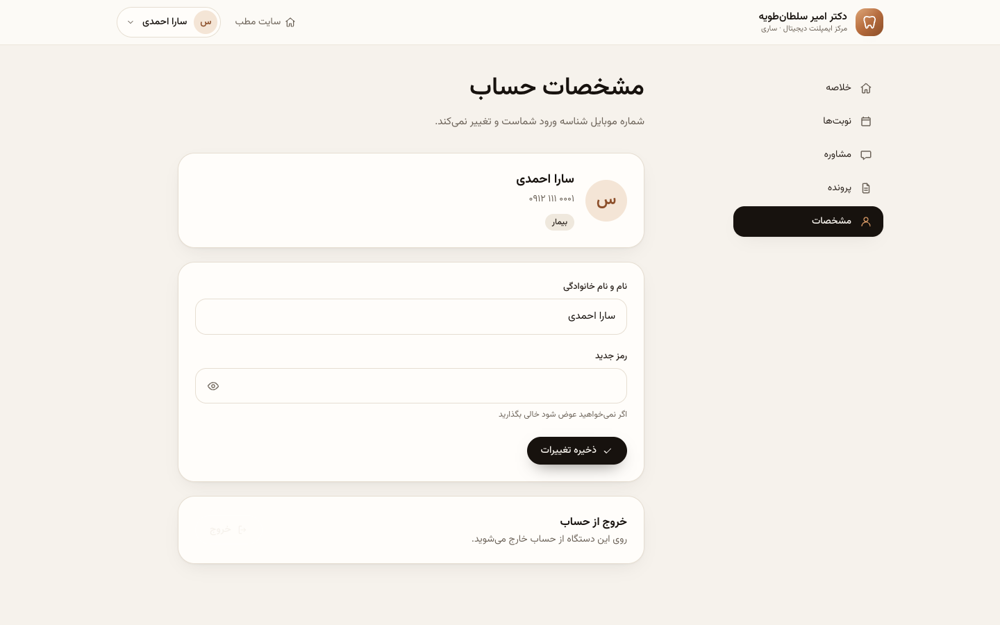
ویرایش نام و رمز.
۳. پزشک
پزشک بعد از ورود به پنل مطب میرود. منو دو بخش دارد. «کار روزانه» برای امروز، تقویم، نوبتها، بیماران و مشاورههاست. «مدیریت مطب» برای دکتر این مطب کامل است، چون حساب او مدیر هم هست. پزشک بدون نقش مدیر فقط ساعت کاری و تلگرام را در بخش دوم میبیند، و ساعت ثابت هفته را نمیتواند ذخیره کند.
امروز
صفحه اول پنل، کار همان روز است: تعداد نوبت، مشاوره بیپاسخ، بیماران ثبتشده و کسانی که پرونده ندارند. پایین، برنامه ساعتبهساعت امروز و مشاورههای منتظر جواب است.
وارد شوید. اگر نقش مطب داشته باشید، مستقیم به «امروز» میآیید.
کارتها را ببینید. عدد نارنجی یعنی مشاوره بیجواب. عدد نوبت، قرارهای فعال امروز است.
روی یک نوبت بزنید تا به فهرست نوبتها بروید. روی یک مشاوره بزنید تا گفتگو باز شود.
اگر برچسب «در انتظار تأیید» دیدید، همان روز درخواست تازه دارید.
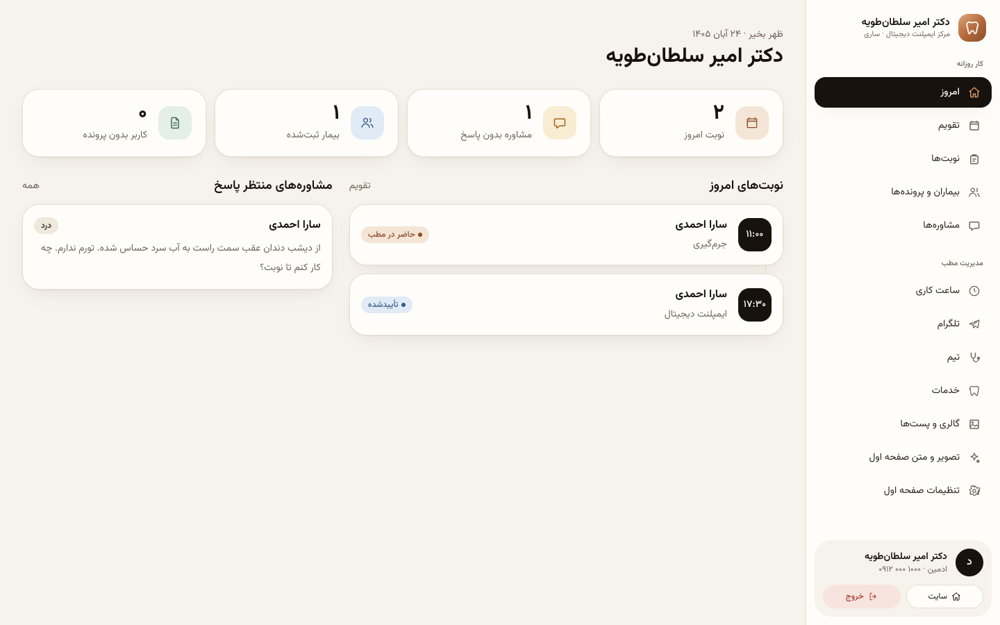
امروزِ پزشک: دو نوبت، یک مشاوره باز، و منوی کامل مدیریت چون این حساب مدیر هم هست.
تقویم
تقویم شمسی ماه را نشان میدهد. روزهایی که نوبت دارند عدد کوچک دارند. با انتخاب روز، فهرست همان روز کنار تقویم میآید. روی نام بیمار بزنید تا پروندهاش باز شود.
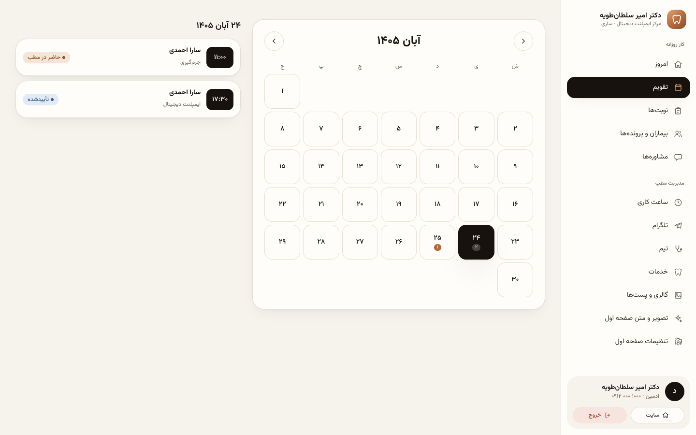
تقویم شمسی و نوبتهای روز انتخابشده.
نوبتها و وضعیت حضور
کار نوبت اینجاست. پزشک میتواند «نوبتهای من» یا «همه نوبتهای مطب» را ببیند. چهار زبانه هست: منتظر تأیید، امروز، پیشرو، بایگانی.
مسیر وضعیت این است:
درخواستشده: بیمار ساعت را خواسته. «تأیید نوبت» را بزنید تا قطعی شود، یا «لغو».
تأییدشده: بیمار وقت دارد. وقتی آمد «ثبت حضور» را بزنید. اگر نیامد «نیامد».
حاضر در مطب: ویزیت شروع شده. در پایان «پایان ویزیت» را بزنید.
انجامشده، لغو شده و نیامده به بایگانی میروند.
نام بیمار لینک پرونده است. توضیح بیمار زیر ساعت دیده میشود. تأیید و لغو، اگر تلگرام وصل باشد، به تیم هم میرود.
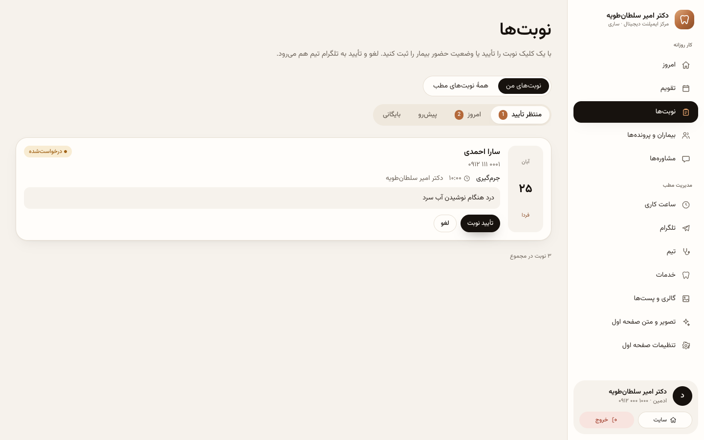
زبانه منتظر تأیید: دکمه «تأیید نوبت» و «لغو».
بیماران و پرونده
فهرست، همه کاربران را نشان میدهد. جستجو با نام یا موبایل است. فیلترها: همه، بیماران، بدون پرونده، دارای پرونده، تیم مطب. پزشک از اینجا پرونده را باز میکند. ساخت حساب تازه با منشی و مدیر است؛ دکمه «افزودن بیمار» برای پزشکِ بدون نقش مدیر نیست.
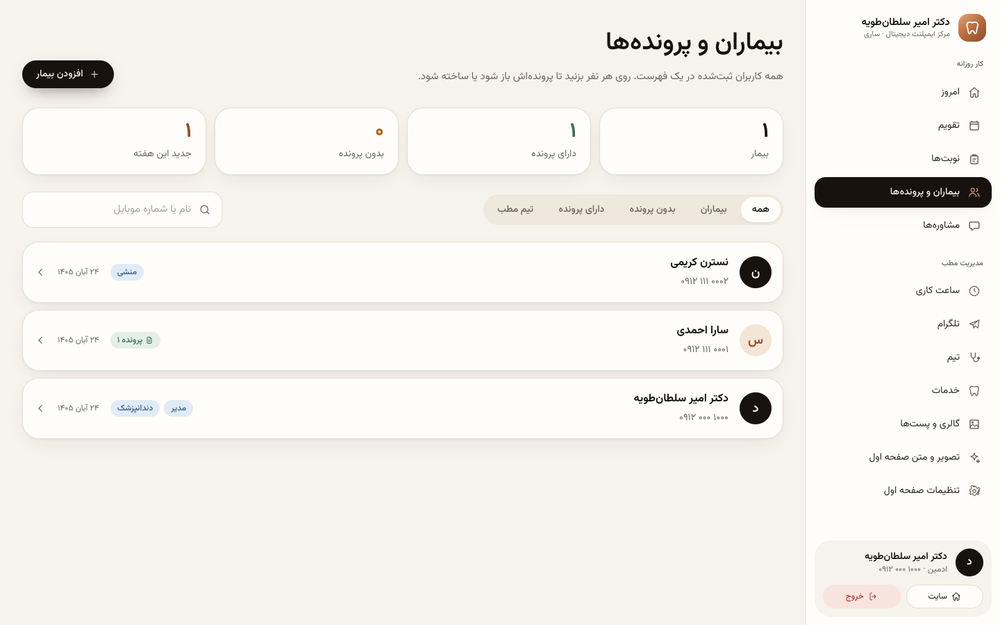
فهرست بیماران و پروندهها.
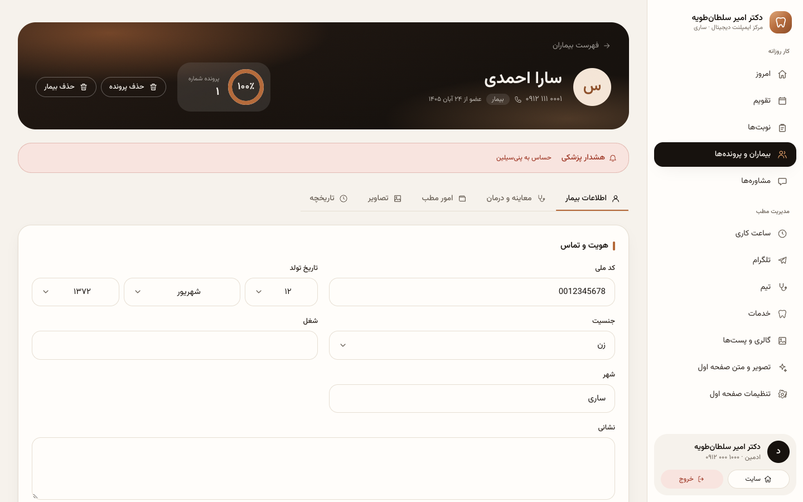
سربرگ پرونده: نام، تلفن، شماره پرونده و درصد تکمیل. هشدار پزشکی بالای زبانههاست.
معاینه، تشخیص و نقشه دندان
زبانه «معاینه و درمان» مخصوص پزشک و مدیر است. منشی آن را میبیند ولی ذخیره نمیکند.
پرونده بیمار را باز کنید و «معاینه و درمان» را بزنید.
طبقهبندی ASA، معاینه خارج و داخل دهان، وضعیت لثه، بهداشت، ریسک پوسیدگی، اکلوژن و مفصل فک را بنویسید.
تشخیص و طرح درمان را بنویسید. طرح درمان را بیمار هم در پرونده خودش میبیند.
هشدار را کوتاه بنویسید، مثل «حساس به پنیسیلین»، و با افزودن ثبت کنید. هشدار بالای پرونده و برای بیمار دیده میشود.
یادداشت بالینی برای تیم درمان است.
در «نقشه دندانها» روی دندان بزنید و وضعیت را انتخاب کنید: سالم، پوسیدگی، پرشده، عصبکشی، روکش، ایمپلنت، کشیدهشده یا بریج. توضیح کوتاه هم میتوانید بنویسید.
پایین همین زبانه، یادداشت ویزیت را اضافه کنید. اگر «داخلی» باشد بیمار آن را نمیبیند.
فرم معاینه و درمان.
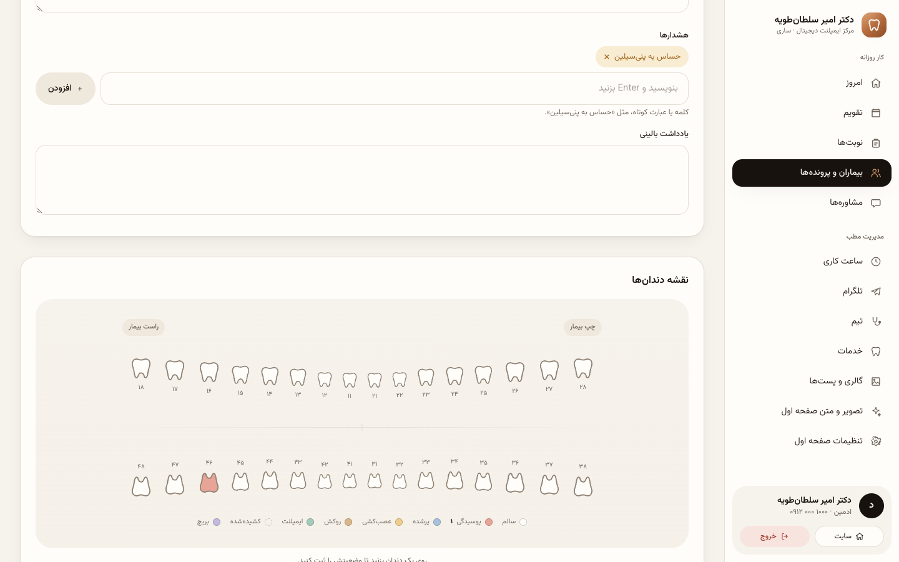
نقشه دندان. دندان ۴۶ بهعنوان پوسیدگی علامت خورده است. هشدار پنیسیلین بالای فرم است.
پاسخ به مشاوره
مشاوره باز در صفحه امروز هم هست. از «مشاورهها» همه را میبینید.
«مشاورهها» را باز کنید و گفتگوی بیمار را انتخاب کنید.
شرح و عکس بیمار را بخوانید.
پاسخ را بنویسید. اگر لازم است عکس اضافه کنید.
«ارسال» را بزنید. وضعیت گفتگو «پاسخدادهشده» میشود.
وقتی موضوع تمام شد میتوانید مشاوره را ببندید. گفتگوی بسته دیگر پیام تازه نمیگیرد.
در پاسخ بنویسید که این گفتگو جای معاینه نیست، اگر تصمیم درمانی به ویزیت نیاز دارد.
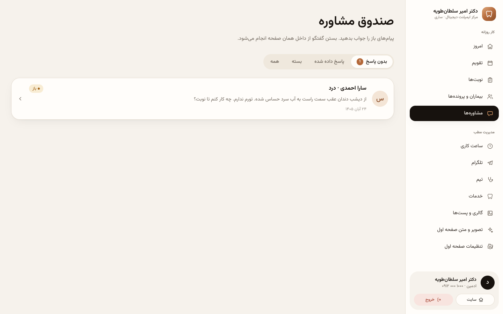
فهرست مشاورههای مطب.
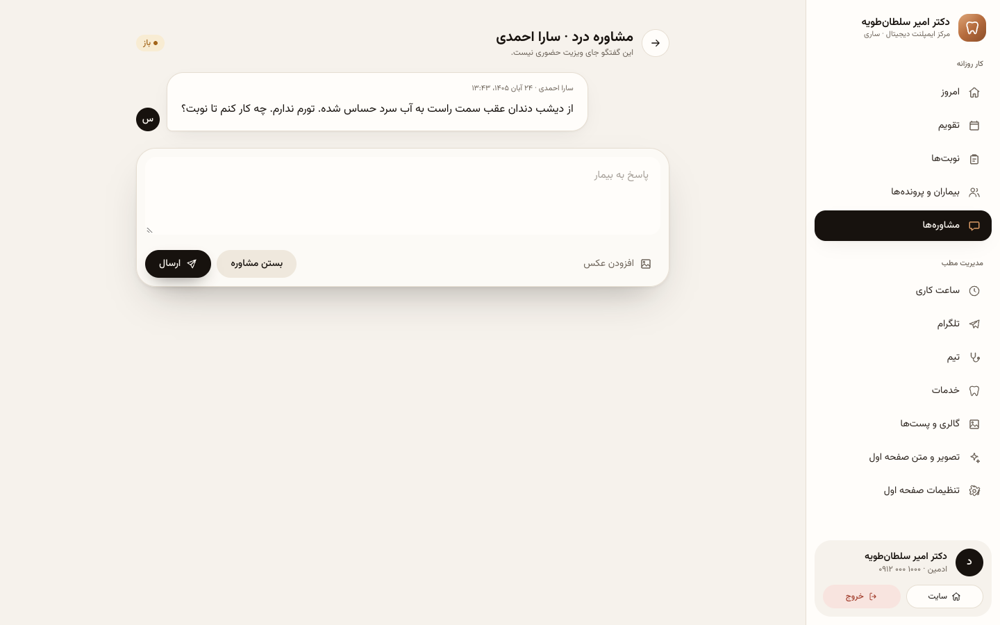
گفتگو از دید مطب: کادر پاسخ، دکمه ارسال، بستن مشاوره و افزودن عکس.
ساعت کاری مدیر
ساعت ثابت هفته را فقط مدیر ذخیره میکند. هر روز دو شیفت دارد. شیفت خالی یعنی آن نوبت روز تعطیل است. روز بدون هیچ شیفت، کلاً بسته است. ساعت پیشفرض این مطب: شنبه تا چهارشنبه ۹ تا ۱۳ و ۱۶ تا ۲۱، پنجشنبه ۹ تا ۱۳، جمعه تعطیل.
«ساعت کاری» را باز کنید.
برای هر روز، شروع و پایان شیفت اول و اگر لازم است شیفت دوم را بنویسید.
«ذخیره ساعتها» را بزنید. این دکمه فقط برای مدیر است.
برای مرخصی یا جلسه، پایین صفحه تاریخ و بازه را وارد کنید و «بستن این بازه» را بزنید. تا وقتی بازه بسته است، بیمار در آن ساعتها نوبت نمیبیند.
برای باز کردن دوباره، همان بازه را حذف کنید.
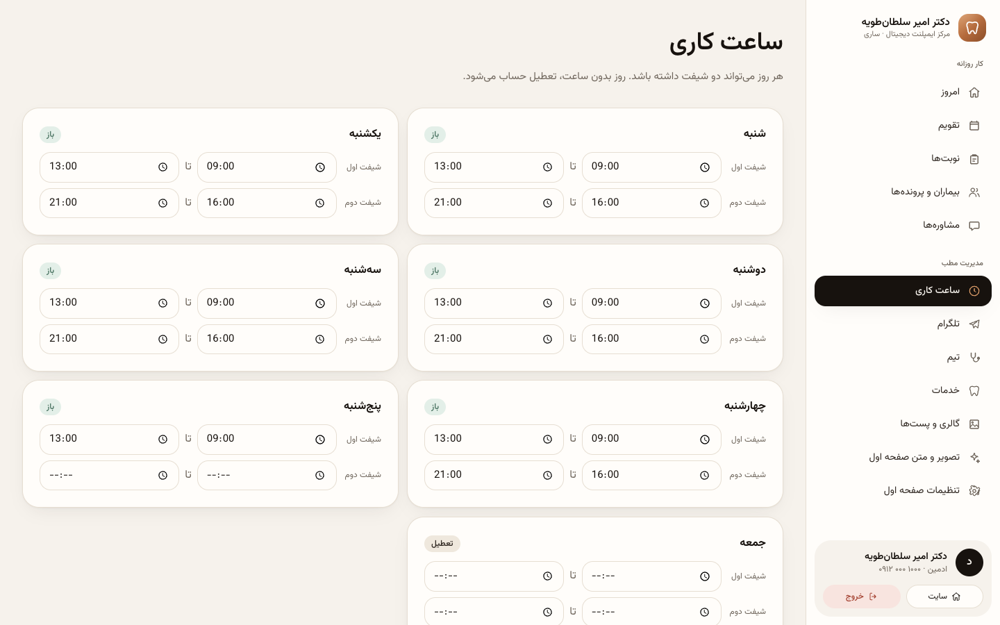
شیفتهای هفته. ذخیره ساعت ثابت مخصوص مدیر است.
تلگرام
نوبت تازه، لغو نوبت، مشاوره تازه و پیام جدید مشاوره میتواند به تلگرام همان شخص برود. مدیر باید اول اجازه اتصال را برای آن همکار روشن کرده باشد. صندوق پیامهای ارسالنشده فقط برای مدیر است.
«تلگرام» را باز کنید.
اگر «متصل نیست» بود، «ساخت لینک اتصال» را بزنید و لینک را در تلگرام باز کنید.
با کلیدها مشخص کنید کدام رویدادها برایتان بیاید.
مدیر در «صندوق ارسال» میبیند پیامی مانده یا خطا خورده، و میتواند ارسال دوباره را بزند.
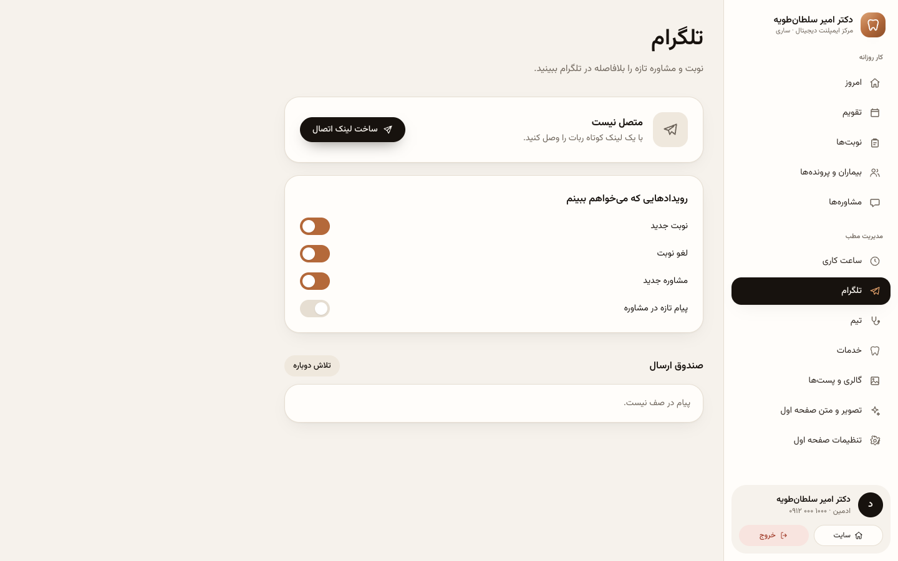
اتصال ربات و انتخاب رویدادها. صندوق ارسال مخصوص مدیر است.
تیم مدیر
مدیر از اینجا منشی یا پزشک جدید میسازد، نقش را عوض میکند و اجازه تلگرام را روشن یا خاموش میکند.
«تیم» را باز کنید.
«افزودن» را بزنید. نام، موبایل و رمز حداقل ۸ کاراکتر را بنویسید.
نقش را انتخاب کنید: منشی، پزشک یا مدیر. یک نفر میتواند بیش از یک نقش داشته باشد.
عنوان، مثل «منشی مطب»، را بنویسید. برای پزشک، تخصص و معرفی را هم وارد کنید.
اگر باید تلگرام بگیرد، اجازه اتصال را روشن کنید.
ذخیره کنید و رمز را به همان همکار بدهید. او با همان موبایل و رمز وارد میشود.
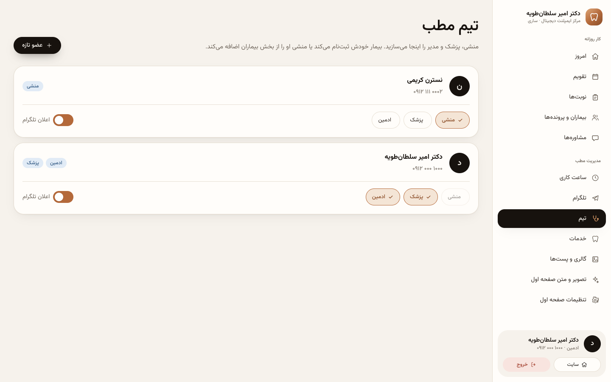
فهرست تیم و ساخت همکار جدید.
خدمات سایت مدیر
خدمتهایی که بیمار در سایت و در فرم نوبت میبیند از اینجا ساخته میشوند. مدت هر خدمت روی فاصله ساعتهای خالی اثر دارد.
«خدمات» را باز کنید.
برای خدمت تازه، افزودن را بزنید. عنوان، خلاصه، توضیح و مدت به دقیقه را بنویسید.
عکس خدمت را جداگانه بگذارید. اگر برندارید، تصویر پیشفرض میماند.
با کلید انتشار، خدمت را در سایت نشان بدهید یا پنهان کنید.
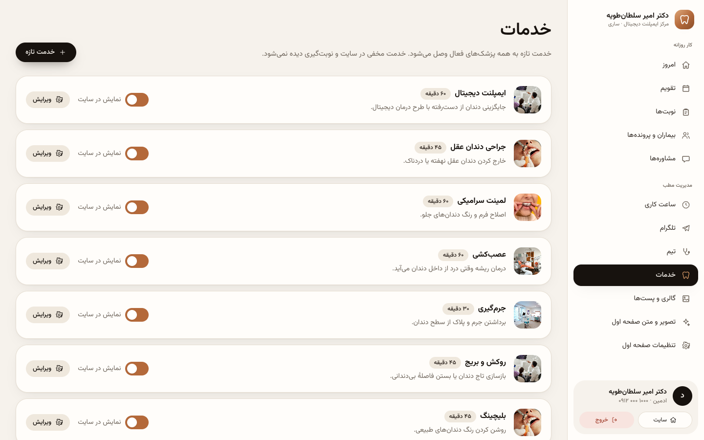
ویرایش خدمات منتشرشده در سایت.
گالری و پستها مدیر
پستهای صفحه اول و صفحه «پستها» از اینجا میآیند. میتوانید عکس یا ویدیو بگذارید، یا با توکن اینستاگرام پستها را همگام کنید.
«گالری و پستها» را باز کنید.
فایل jpg، png، webp، mp4 یا webm را انتخاب کنید و توضیح کوتاه بنویسید.
انتشار را روشن کنید تا در سایت دیده شود. ترتیب را با مرتبسازی عوض کنید.
برای اینستاگرام، توکن را بگذارید و همگامسازی را بزنید. توکن را در راهنما یا پیام برای کسی نفرستید.
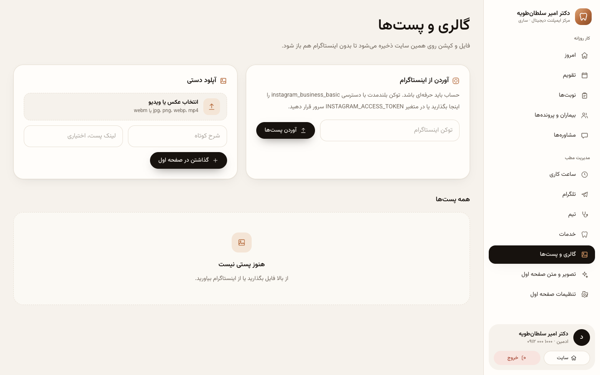
گالری: بارگذاری، انتشار و همگامسازی اینستاگرام.
تصویر و متن صفحه اول مدیر
عکس بزرگ بالا، سه کارت تصویری، عنوان بخشها و متن سه قدم نوبت از این صفحه عوض میشود. خودِ پرسشها و آدرس در «تنظیمات» هستند. عکس هر خدمت در صفحه خدمات است.
«تصویر و متن صفحه اول» را باز کنید.
زبانه بخش را انتخاب کنید: بالای صفحه، سه تصویر، خدمات، پزشک، مراحل نوبت، پستها، مطب و نقشه، پرسشها.
متن را عوض کنید یا عکس تازه بگذارید و ذخیره کنید.
سایت را یکبار باز کنید و همان بخش را ببینید.
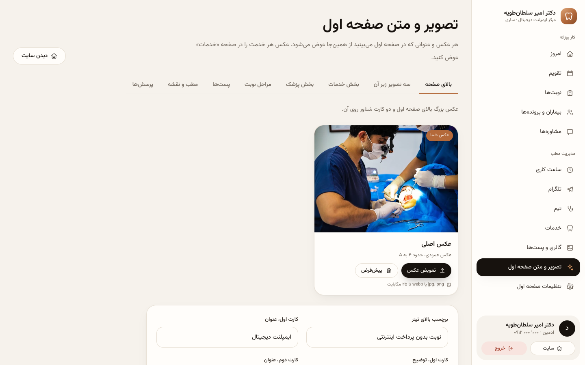
ویرایش متن و عکس بخشهای صفحه اول.
تنظیمات صفحه اول مدیر
نام مرکز، تیتر، معرفی پزشک، آدرس، تلفنها، اینستاگرام، توضیح ساعت کاری، نشان مطب و پرسشهای متداول اینجاست.
«تنظیمات صفحه اول» را باز کنید.
زبانه را انتخاب کنید: صفحه اول، درباره پزشک، تماس و آدرس، یا پرسشها.
متن را ذخیره کنید.
برای پرسش تازه، سؤال و جواب را بنویسید و اضافه کنید. پرسش بیاستفاده را حذف کنید.
نشان مطب را از همین صفحه عوض کنید. این نشان کنار نام، بالای سایت است.
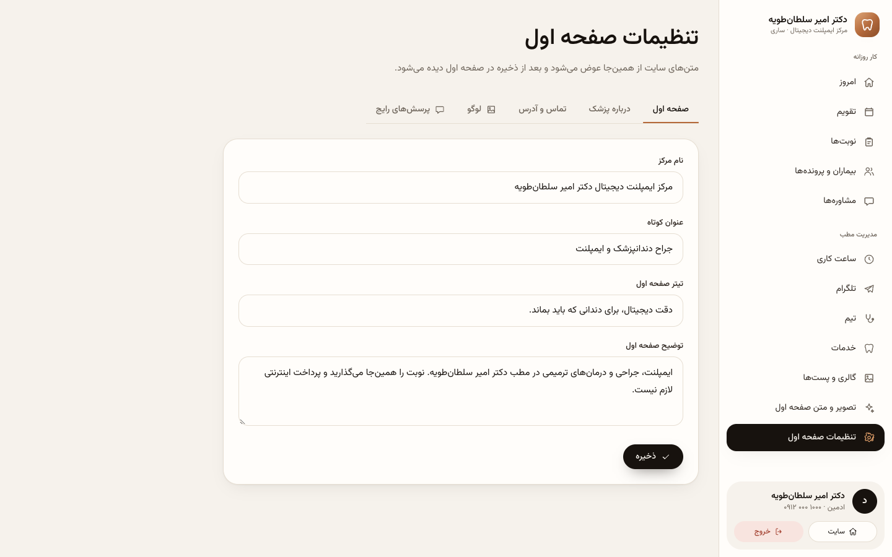
نام، تیتر، آدرس، تلفن و پرسشهای سایت.
۴. منشی
منشی همان صفحه «امروز» را میبیند، ولی منوی مدیریت فقط «ساعت کاری» و «تلگرام» است. تیم، خدمات، گالری، متن سایت و تنظیمات را ندارد. کار اصلی منشی: تأیید نوبت، ساخت حساب بیمار، پیگیری، رضایتنامه و حساب مالی.
ورود و صفحه امروز
منشی با موبایل و رمزی که مدیر موقع ساخت حساب داده وارد میشود و به پنل مطب میرود. اگر نقش بیمار نداشته باشد، حساب بیمار برای او باز نمیشود.
از صفحه ورود، موبایل و رمز را بنویسید و کد تصویر را وارد کنید.
صفحه امروز را ببینید: نوبتهای امروز و مشاورههای بیجواب.
منوی راست را با منوی پزشک مقایسه کنید. زیر «مدیریت مطب» فقط ساعت کاری و تلگرام است.
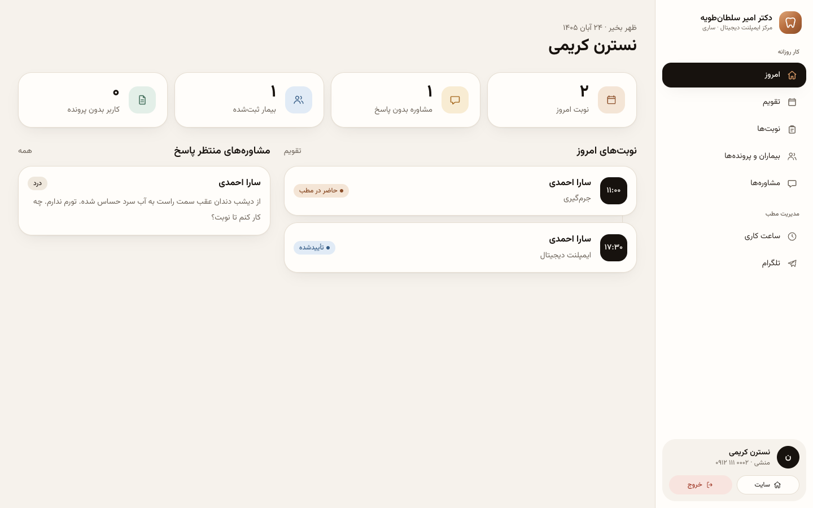
امروز از دید منشی. منو در بخش مدیریت مطب کوتاه است.
تأیید و پیگیری نوبت
دکمهها همان دکمههای پزشک است. منشی معمولاً اول صبح زبانه «منتظر تأیید» را خالی میکند و در طول روز حضور را ثبت میکند.
«نوبتها» را باز کنید.
در «منتظر تأیید»، هر درخواست را بخوانید: نام، تلفن، خدمت، ساعت و یادداشت بیمار.
«تأیید نوبت» یا «لغو» را بزنید.
در «امروز»، وقتی بیمار آمد «ثبت حضور» را بزنید. اگر وقت گذشت و نیامد «نیامد».
بعد از ویزیت، «پایان ویزیت» را بزنید. این کار را پزشک هم میتواند بکند.
روی نام بزنید تا پرونده همان بیمار باز شود.
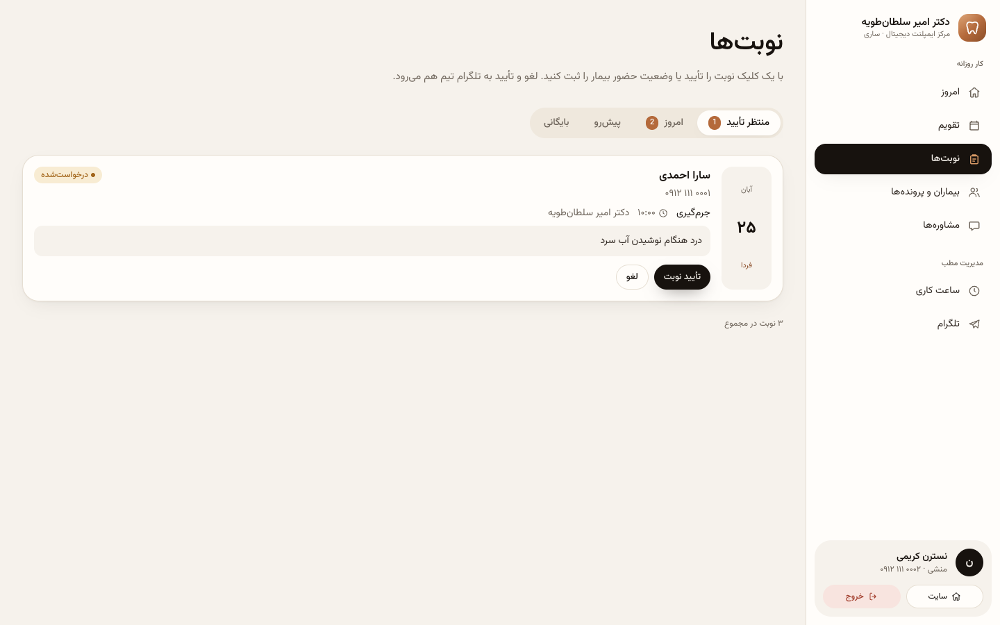
نوبتها برای منشی. سوییچ «نوبتهای من» نیست، چون منشی پزشک معالج نیست.
ساخت بیمار
اگر بیمار خودش ثبتنام نکرده، منشی حسابش را میسازد تا نوبت و پرونده به همان شخص وصل شود.
«بیماران و پروندهها» را باز کنید.
«افزودن بیمار» را بزنید.
نام و شماره موبایل را بنویسید.
رمز را بگذارید، یا خالی بگذارید تا سامانه یک رمز موقت بسازد. رمز موقت را همان لحظه برای بیمار یادداشت کنید؛ دوباره نشان داده نمیشود.
بعد از ساخت، بیمار را در فهرست پیدا کنید و پروندهاش را باز کنید. اگر پرونده ندارد، «ساخت پرونده» را بزنید.
با جستجو، نام یا موبایل را پیدا کنید. فیلتر «بدون پرونده» کسانی را نشان میدهد که هنوز فرم سلامت ندارند.
فهرست، جستجو، فیلترها و دکمه افزودن بیمار.
امور مطب
در پرونده، زبانه «امور مطب» برای منشی و مدیر است. پزشکِ بدون نقش مدیر این زبانه و حساب مالی را ندارد. بیمار هم یادداشت داخلی را نمیبیند.
پرونده را باز کنید. اگر هشدار صورتی بالا بود، قبل از نشستن بیمار آن را بخوانید.
«امور مطب» را بزنید.
وضعیت پرونده را «فعال» یا «بایگانی» بگذارید.
اگر فرم رضایت امضا شده، کلید را روشن کنید.
تاریخ پیگیری بعدی را بگذارید، مثلاً برای جرمگیری ششماه بعد.
یادداشت داخلی را برای هماهنگی تیم بنویسید. این متن به بیمار نشان داده نمیشود.
ذخیره کنید.
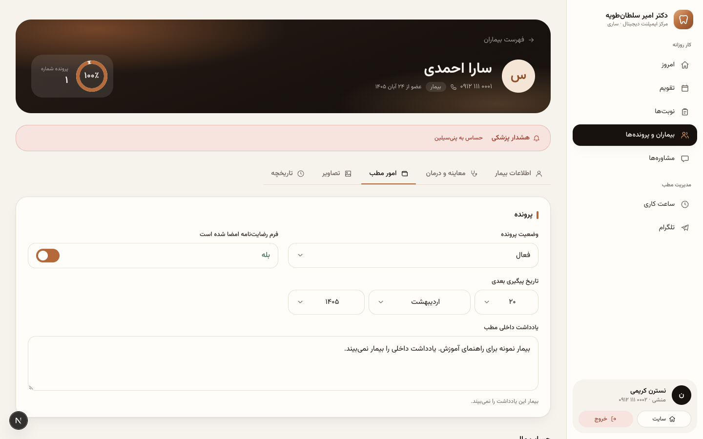
وضعیت پرونده، رضایتنامه، تاریخ پیگیری و یادداشت داخلی.
حساب مالی
پایین همان زبانه «امور مطب» حساب همین بیمار است. مبلغ به تومان است. هزینه درمان مانده را زیاد میکند و پرداخت بیمار مانده را کم میکند.
در پرونده، «امور مطب» را باز کنید و تا «حساب مالی» پایین بروید.
سه عدد بالا را ببینید: جمع هزینهها، پرداختشده، مانده بدهکاری.
برای کار انجامشده، نوع را «هزینه درمان» بگذارید، شرح و مبلغ را بنویسید و ثبت کنید.
وقتی بیمار پول داد، نوع را «پرداخت بیمار» بگذارید و همانطور ثبت کنید.
ردیف اشتباه را با «حذف» بردارید. حذف را فقط وقتی بزنید که آن ردیف واقعاً غلط است.
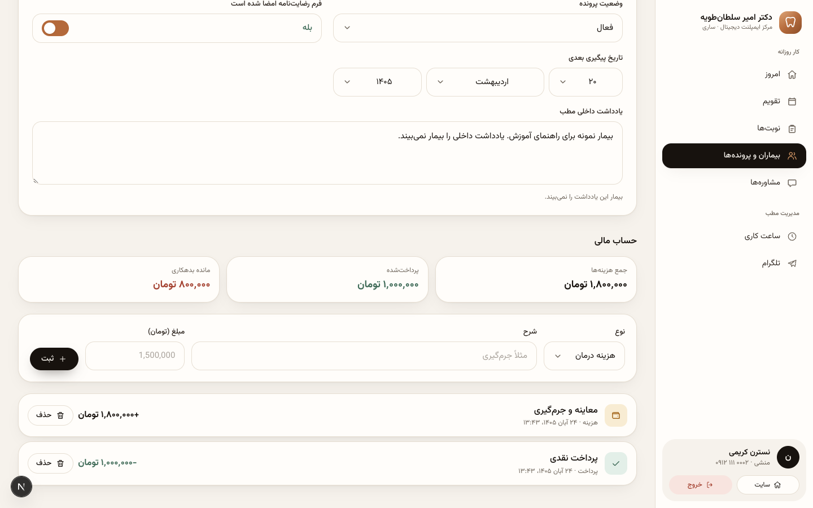
حساب نمونه: ۱٬۸۰۰٬۰۰۰ تومان هزینه، ۱٬۰۰۰٬۰۰۰ پرداخت، ۸۰۰٬۰۰۰ مانده.
مشاوره، ساعت و تلگرام
منشی گفتگوی مشاوره را مثل پزشک باز میکند و جواب میدهد. این برای سؤالهای نوبت و هماهنگی مناسب است. تشخیص و طرح درمان را پزشک در پرونده مینویسد.
در «ساعت کاری»، شیفتهای هفته را فقط میبیند. برای یک روز خاص، پایین صفحه بازه را میبندد تا نوبت اینترنتی در آن ساعتها بسته شود. مدیر بعداً میتواند ساعت ثابت را عوض کند.
در «تلگرام»، اگر مدیر اجازه داده باشد، لینک اتصال را میسازد و انتخاب میکند نوبت جدید، لغو، مشاوره جدید یا پیام تازه را ببیند.
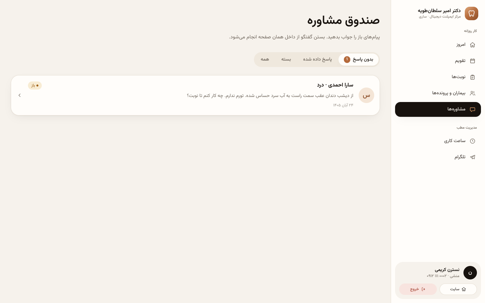
مشاورهها از دید منشی.
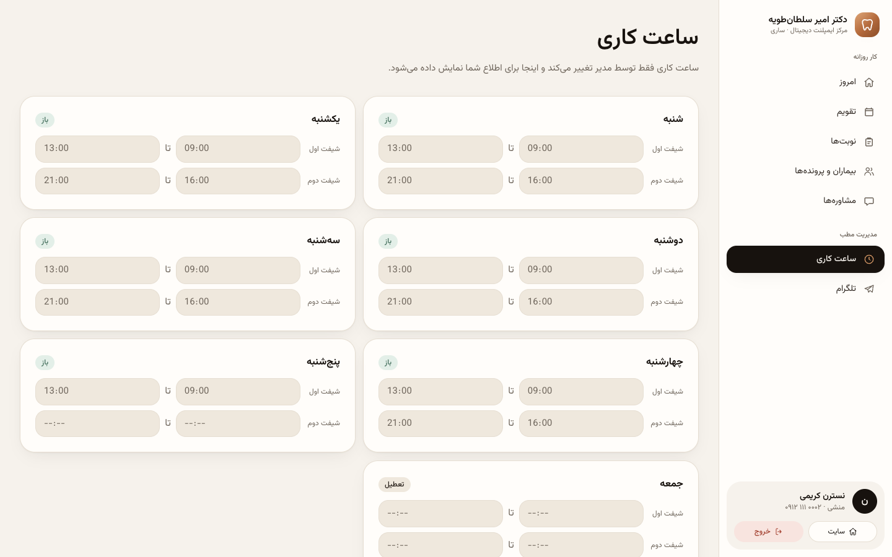
ساعت کاری برای اطلاع منشی. ذخیره شیفت ثابت با مدیر است. بستن بازه موردی از پایین همین صفحه است.
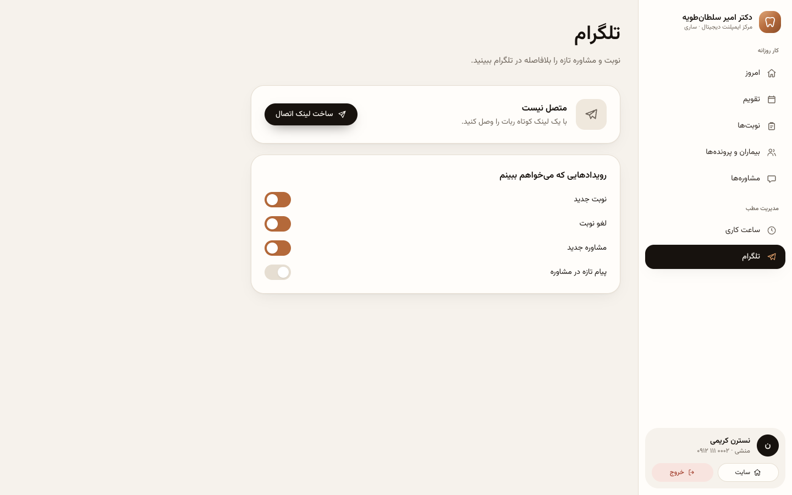
اتصال تلگرام منشی. صندوق ارسال مدیر اینجا نیست.
۵. یک روز معمولی مطب
صبح، منشی
وارد پنل شود و صفحه امروز را ببیند.
زبانه «منتظر تأیید» را خالی کند: هر درخواست را تأیید یا لغو کند.
اگر بیمار تلفنی وقت خواست و حساب ندارد، از «افزودن بیمار» حساب بسازد و رمز را به او بدهد. بعد در تقویم ببیند آن ساعت خالی هست یا نه. نوبت اینترنتی را خود بیمار از حسابش میگیرد؛ منشی درخواست را تأیید میکند.
برای هر کسی که آمد، «ثبت حضور» را بزند و هشدار پرونده را به پزشک بگوید.
حین ویزیت، پزشک
از نوبت امروز وارد پرونده شود.
حساسیت، دارو و هشدار را قبل از شروع بخواند.
معاینه، تشخیص، طرح درمان و نقشه دندان را ثبت کند.
در پایان، وضعیت نوبت را «پایان ویزیت» کند.
بعد از ویزیت، منشی
در «امور مطب» رضایتنامه و تاریخ پیگیری را بهروز کند.
هزینه درمان و پرداخت را در حساب مالی ثبت کند.
اگر بیمار سؤال نوشته، در مشاوره جواب هماهنگی را بدهد و سؤال درمانی را به پزشک بسپارد.
بیمار، هر وقت خواست
از سایت نوبت بگیرد، بدون پرداخت اینترنتی.
منتظر بماند تا وضعیت «تأییدشده» شود.
پرونده سلامت را قبل از مراجعه کامل کند.
اگر سؤال غیرفوری دارد، مشاوره بفرستد و پاسخ را در همان گفتگو بخواند.
این راهنما برای آموزش تیم مطب است. تصویرها داده واقعی بیماران مطب نیستند. رمز ورود را در پیام، کاغذ روی میز، یا داخل این فایل ننویسید. هر کس رمز خودش را از صفحه مشخصات عوض کند.